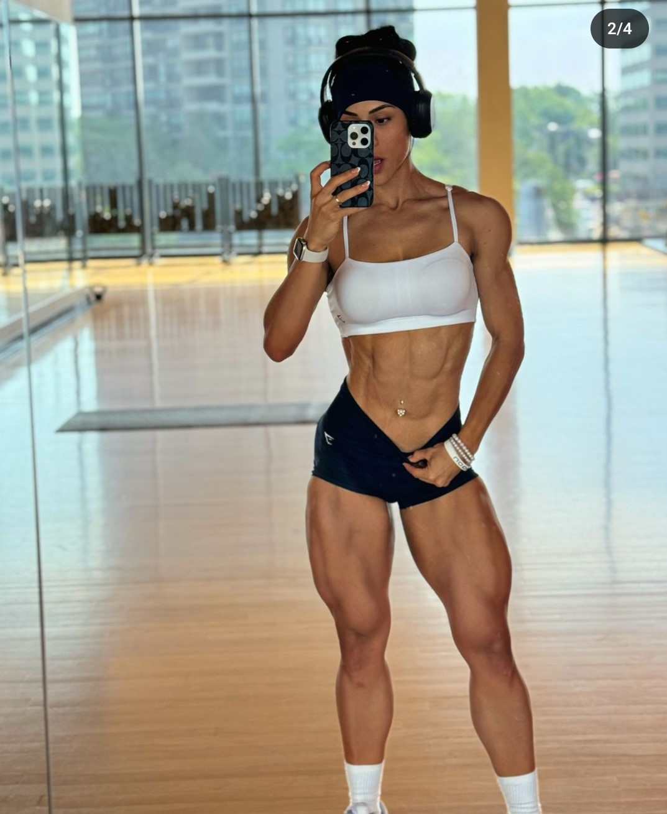
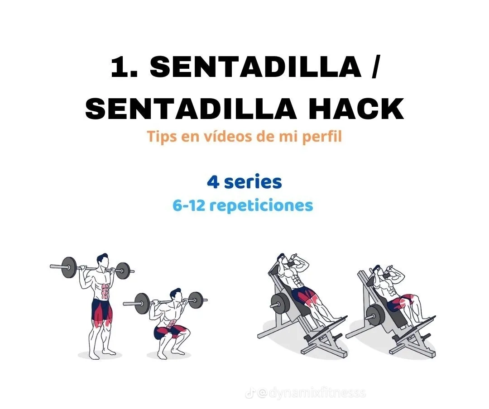
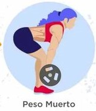
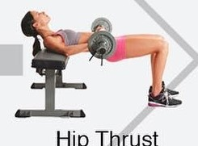
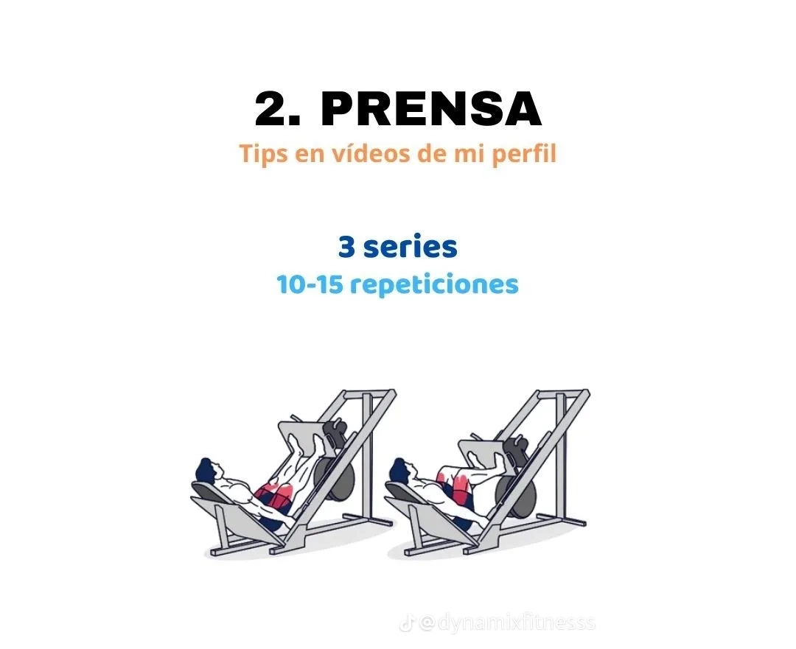

R.MENU

El dia de pierna, es uno de los dias que por nada del mundo debe faltar en nuestra semana, ya que se trata de el dia que se trabaja el grupo muscular mas grande por lo mismo, es de vital importancia tener en claro que el dia de pierna debe llevarse acabo al menos dos veces a la semana, para que el cuerpo se vea de manera mas estetica es decir, que no se vea un desvalance con la parte superior. Siendo las piernas el grupo muscular mas grande se debe dar por hecho que son las que mas fuerza y resistencia se tiene por ende, los ejercicios que se deben realizar son los mas demandantes y desgastantes en la semana.
Para comenzar se debe calenta de manera adecuada, ya sea con estiramientos, en la bicicleta, o caminadora, para empezar a estimular el musculo y asi poder evitar lesiones a futuro

Las sentadillas son por mucho unos de los mejores ejercicios que se pueden realizar, involucra todos los grupos musculares de las piernas, siendo uno de los ejercicios mas demandantes se recomienda hacerla al principio, se pueden hacer 4 series de 8-10 repeticiones con pesos exigentes, es decir, un peso que no sea tan liviano como para hacer mas de 10 repeticiones sin esfuerzo y un peso que nos exiga demaciado, que podria llegar a lecionarnos, en este ejercicio es muy recomendable llevar una carga progreciva para asi poder estimular las pirnas de manera correcta

El peso muerto es uno de los excelentes ejercicios de fuerza para trabajar todos nuestros grupos musculares. Pierna, core, espalda,hombro,brazo...este ejercicio de powerlifting tambien tiene innumerables beneficios para perder peso pero, si no lo ejecutas con la tecnica correcta y con demasiado kilo, teservira muy poco y puede que hasta te provoque una lesion grave en la columna vertebral

Pasamos a trabajar los gluteos e isquios con el hip thrust. este ejercicio tambien nos moveremos con un rango de entre8 y 12 repeticiones por lo tanto en cada serie se va aumentando el peso y acabes moviendo un peso alto que no termita superar el numero de repeticiones anteriores. para hacer este ejercicio nos sentaremos en el suelo apoyando la espalda en un banco y con una barra en nuestra cintura. En esta posicion con las piernas flexionadas y la suela de los pies completamente apoyadas elevamos la barra hasta que nuestri cuerpo formr una linea recta desde las rodillas hasta los hombros,La cabeza debe permanecer relajada durante todo el movimiento y debemos activar el gluteo en cada repeticion llegando a mantener incluso la posicion con la barra elevada durante un segundo a tres segundos.
Con este ejercicio lograremos trabajar la pierna completa, principalmente los cuadriceps. En un rango de 10 en cada pierna dondo un total de 20 pasos. Necesitas un peso alto que permita agotar tus piernas.Utilizaremos de un pie sujetando una mancuerna con cada mano al lado del cuerpo en una posicion comoda. Damos una zancada adelante lo suficientemente amplia para que cuando bajemos la rodilla quede cerca del suelo y ambas piernas formrn un angulo de 90 grados.

se realiza al final del entrenamiento de pierna ya que nos permite usar pesos altos y sentir cada repeticion. En este caso haremos 3 series con 12 repeticiones cada una.para hacerlo simplemente nos sentamos en la silla de forma que nuestra esplada y gluteos esten en contacto con esta y colocamos las piernas a la altura media de la prensa con una separacion similar a la de nuestro hombro. En esta posicion empujamos la prensa sin llegar a estirar del todo las piernas.luego volvemos a la posicion inicial para completar una repeticion